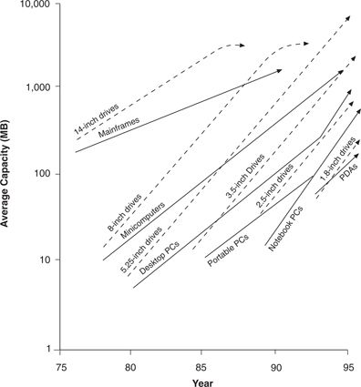

Figure 9.4 summarizes the model of performance oversupply, depicting a multi-tiered market in which the trajectory of performance improvement demanded by the market is shallower than the trajectory of improvement supplied by technologists. Hence, each tier of the market progresses through an evolutionary cycle marked by a shifting basis for product choice. Although other terms for product life cycles would yield similar results, this diagram uses the buying hierarchy devised by Windermere Associates, in which competition centers first on functionality, followed by reliability, convenience, and, finally, price. In each of the cases reviewed in this chapter, the products heralding shifts in the basis of competition and progression to the next product life cycle phase were disruptive technologies.
Figure 9.4 Managing Changes in the Basis of Competition
The figure shows the strategic alternatives available to companies facing performance oversupply and the consequent likelihood that disruptive approaches will change the nature of competition in their industry. The first general option, labeled strategy 1 and the one most commonly pursued in the industries explored in this book, is to ascend the trajectory of sustaining technologies into ever-higher tiers of the market, ultimately abandoning lower-tier customers when simpler, more convenient, or less costly disruptive approaches emerge.
A second alternative, labeled strategy 2, is to march in lock-step with the needs of customers in a given tier of the market, catching successive waves of change in the basis of competition. Historically, this appears to have been difficult to do, for all of the reasons described in earlier chapters. In the personal computer industry, for example, as the functionality of desktop machines came to satiate the demands of the lower tiers of the market, new entrants such as Dell and Gateway 2000 entered with value propositions centered on convenience of purchase and use. In the face of this, Compaq responded by actively pursuing this second approach, aggressively fighting any upmarket drift by producing a line of computers with low prices and modest functionality targeted to the needs of the lower tiers of the market.
The third strategic option for dealing with these dynamics is to use marketing initiatives to steepen the slopes of the market trajectories so that customers demand the performance improvements that the technologists provide. Since a necessary condition for the playing out of these dynamics is that the slope of the technology trajectory be steeper than the market’s trajectory, when the two slopes are parallel, performance oversupply—and the progression from one stage of the product life cycle to the next—does not occur or is at least postponed.
Some computer industry observers believe that Microsoft, Intel, and the disk drive companies have pursued this last strategy very effectively. Microsoft has used its industry dominance to create and successfully market software packages that consume massive amounts of disk memory and require ever-faster microprocessors to execute. It has, essentially, increased the slopes of the trajectories of improvement in functionality demanded by their customers to parallel the slope of improvement provided by their technologists. The effect of this strategy is described in Figure 9.5, depicting recent events in the disk drive industry. (This chart updates through 1996 the disk drive trajectory map in Figure 1.7.) Notice how the trajectories of capacity demanded in the mid-range, desktop, and notebook computer segments kinked upward in the 1990s along a path that essentially paralleled the capacity path blazed by the makers of 3.5-inch and 2.5-inch disk drives. Because of this, these markets have not experienced performance oversupply in recent years. The 2.5-inch drive remains locked within the notebook computer market because capacity demanded on the desktop is increasing at too brisk a pace. The 3.5-inch drive remains solidly ensconced in the desktop market, and the 1.8-inch drive has penetrated few notebook computers, for the same reasons. In this situation, the companies whose products are positioned closest to the top of the market, such as Seagate and IBM, have been the most profitable, because in the absence of technology oversupply, a shift in the stages of the product life cycle at the high end of the market has been held at bay.
Figure 9.5 Changed Performance Demand Trajectories and the Deferred Impact of Disruptive Technologies

Source: An earlier version of this figure was published in Clayton M. Christensen, “The Rigid Disk Drive Industry: A History of Commercial and Technological Turbulence,” Business History Review 67, no. 4 (Winter 1993): 559.
It is unclear how long the marketers at Microsoft, Intel, and Seagate can succeed in creating demand for whatever functionality their technologists can supply. Microsoft’s Excel spreadsheet software, for example, required 1.2 MB of disk storage capacity in its version 1.2, released in 1987. Its version 5.0, released in 1995, required 32 MB of disk storage capacity. Some industry observers believe that if a team of developers were to watch typical users, they would find that functionality has substantially overshot mainstream market demands. If true, this could create an opportunity for a disruptive technology—applets picked off the internet and used in simple internet appliances rather than in full-function computers, for example—to invade this market from below.